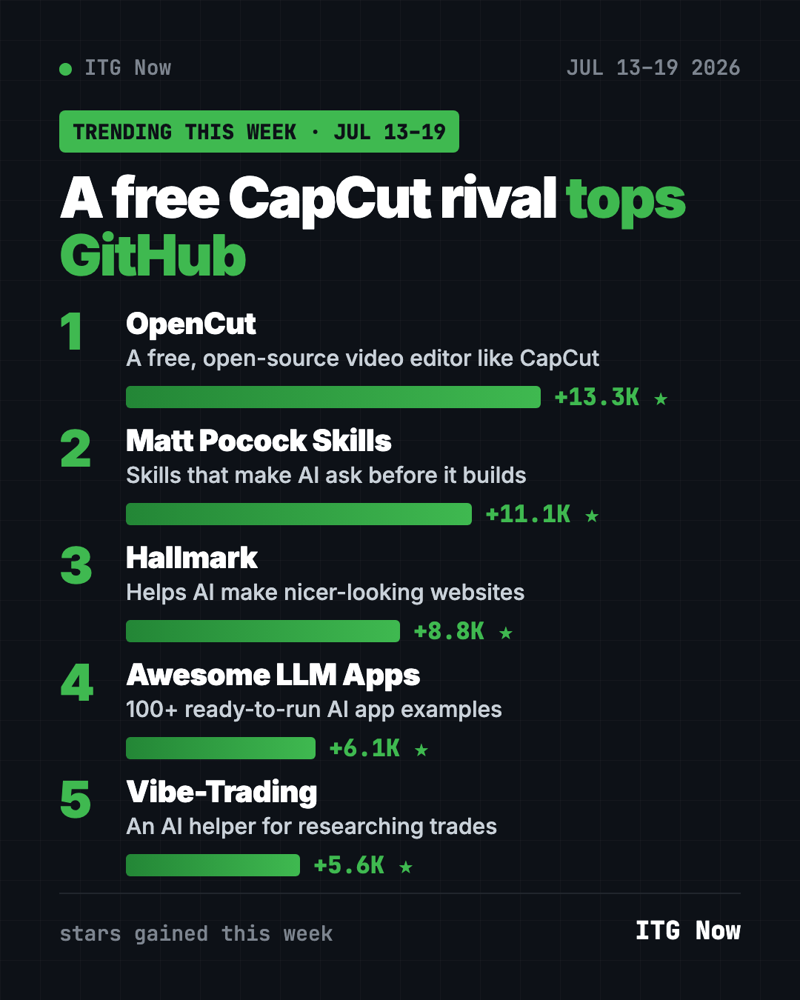
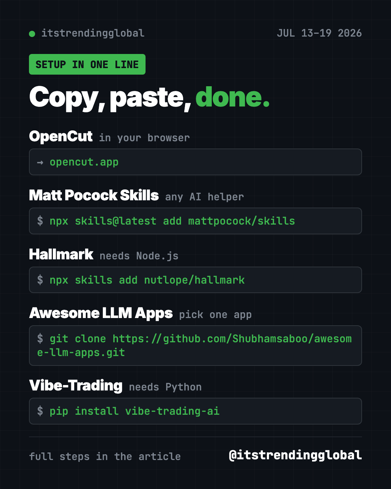

Home › Top repos › GitHub trending this week
GitHub Trending the Week of July 13, 2026: OpenCut Wins
- Top repos
- Published 2026-10-15
- 6 min read
- Updated 2026-10-16
- By the It's Trending Global team
GitHub trending the week of July 13, 2026: free CapCut rival OpenCut, Matt Pocock's skills, Hallmark, Awesome LLM Apps and Vibe-Trading, explained simply.
What made GitHub trending the week of July 13, 2026? A free video editor. OpenCut, an open-source alternative to CapCut, gained 13,300 stars and took first place. Matt Pocock's skills, Hallmark, Awesome LLM Apps and Vibe-Trading followed.
CapCut is the popular video app many creators use for Reels and TikToks. OpenCut's pitch is simple: the same basics, free, with your videos staying on your device. The rest of this week's list helps AI helpers build better, look better, or do research.
Key takeaways
- OpenCut is a free video editor that runs in your browser at opencut.app.
- Matt Pocock's skills make AI coding helpers ask questions before they build.
- Hallmark steers AI away from the same tired website look.
- Awesome LLM Apps collects 100+ AI apps and agents you can copy and run.
- Vibe-Trading is an AI research helper for trading ideas. Treat it as a learning tool.

Side-by-side comparison
| Repo | What it is | For | Stars this week | Setup |
|---|---|---|---|---|
| OpenCut | Free CapCut alternative | Video makers | +13.3K | None, it's a website |
| Matt Pocock Skills | Add-ons for AI coding helpers | People building with AI | +11.1K | One command |
| Hallmark | Design rules for AI | Anyone asking AI for a website | +8.8K | One command |
| Awesome LLM Apps | 100+ AI app examples | Learners and tinkerers | +6.1K | Clone and pick one |
| Vibe-Trading | AI trading research helper | People studying markets | +5.6K | Python |
Star gains are for July 13-19 only. Totals were checked on October 16, 2026.
1. OpenCut: the free CapCut alternative
Stars: +13.3K this week · about 94.7K total
What it is: A free, open-source video editor. You bring in clips, cut them and put them together. The project gives three reasons it exists: privacy, free features, and simplicity. There are two versions. The classic one at opencut.app works today. A rewrite at new.opencut.app is still being built.
Who it's for: Anyone who edits short videos and doesn't want a subscription.
Everyday use: Cut your vacation clips into a 30-second reel, right in the browser.
Start it: No install. Open opencut.app, create a project, add clips, cut and export.
Or ask your AI helper:
Explain the difference between OpenCut classic and the rewrite at github.com/OpenCut-app/OpenCut, and which one I should use today.
See OpenCut on GitHub · Read our full guide
2. Matt Pocock Skills: make AI ask before it builds
Stars: +11.1K this week · about 292.6K total
What it is: These are the skill files Matt Pocock uses with his own AI helpers, shared for free. They make the AI ask questions first, test its work, and keep your project tidy.
Who it's for: Anyone whose AI keeps building the wrong thing.
Everyday use: Describe a feature and have the AI interview you before writing a line.
Install it for Claude Code. Copy and paste this:
claude plugin install mattpocock-skills@claude-plugins-official
For Cursor and other tools, use npx skills@latest add mattpocock/skills.
Or ask your AI helper:
Install Matt Pocock's skills from github.com/mattpocock/skills and run the setup skill with me.
See Matt Pocock Skills on GitHub · Read our full guide
3. Hallmark: websites that don't look AI-made
Stars: +8.8K this week · about 30.1K total
What it is: A free design skill for Claude Code, Cursor and Codex. Ask for a website and you often get the same purple glow and three boxes in a row. Hallmark picks a layout and theme that fit your idea instead.
Who it's for: Small business owners and makers who build sites with AI.
Everyday use: "Build a homepage for my dog-walking business. Friendly, local, trustworthy."
Install it. You need Node.js. Copy and paste this:
npx skills add nutlope/hallmark
Or ask your AI helper:
Use Hallmark to build a homepage for my yoga studio, calm and warm, with a class schedule section.
See Hallmark on GitHub · Read our full guide

4. Awesome LLM Apps: 100+ AI apps to copy
Stars: +6.1K this week · about 141.9K total
What it is: A big free collection of AI agents, skills and apps you can run yourself. They work with Claude, Gemini, GPT, DeepSeek, Llama, Qwen and other models. It's a great place to learn by taking something apart.
Who it's for: Learners and tinkerers who want working examples, not theory.
Everyday use: Run the AI travel agent example and plan a weekend trip.
Install it. Copy and paste this:
git clone https://github.com/Shubhamsaboo/awesome-llm-apps.git
cd awesome-llm-apps/starter_ai_agents/ai_travel_agent
pip install -r requirements.txt
streamlit run travel_agent.py
Or ask your AI helper:
From github.com/Shubhamsaboo/awesome-llm-apps, pick three beginner-friendly agents for me and run the travel agent.
See Awesome LLM Apps on GitHub
5. Vibe-Trading: an AI helper for market research
Stars: +5.6K this week · about 35.6K total
What it is: A trading research agent from HKUDS, the team behind nanobot. You describe a strategy in plain words, and it can backtest it. A backtest checks how a strategy would have done on past prices.
Who it's for: People learning how trading strategies are tested.
Everyday use: "Backtest buying an index fund every month in 2024 and show the result."
Install it. You need Python. Copy and paste this:
pip install vibe-trading-ai
vibe-trading init
vibe-trading serve --port 8899
Or ask your AI helper:
Install Vibe-Trading from github.com/HKUDS/Vibe-Trading and backtest a simple monthly index fund plan for 2024, explained simply.
⚠️ Heads up: This is a research tool, not advice. Past results don't predict future ones. The README also warns that an X account and a crypto token using its name are fake. Don't buy anything that claims to be "official."
Which one should you try first?
- You edit videos: OpenCut. Just open the website.
- You build with AI: Matt Pocock Skills.
- You need a nicer website: Hallmark.
- You learn by doing: Awesome LLM Apps.
- You study markets: Vibe-Trading, carefully.
See the full month in the top GitHub repos of July 2026 and July 2026 in AI news. Neighbors: the week of July 6 and the week of July 20.
FAQ
What was on GitHub trending the week of July 13, 2026?
OpenCut led with about 13,300 new stars. Matt Pocock Skills, Hallmark, Awesome LLM Apps and Vibe-Trading followed.
Is OpenCut really free?
Yes. It's free and open source under the MIT license, and the classic editor runs in your browser.
Do I need to code to use these?
OpenCut needs no code at all. For the others, paste our prompt into Claude Code or Codex and it will run the setup for you.
Can Vibe-Trading trade with my money?
Treat it as a research and learning tool. Always make your own decisions, and never connect accounts you aren't ready to risk.
Want a new free tool explained every day? Follow ITG Now on Instagram.
Keep reading

Trending GitHub Repos October 2026: The Top 5 So Far
The trending GitHub repos of October 2026 so far: a free Photoshop-style editor, an AI art studio, a big AI model for gaming PCs and more, explained.

Trending GitHub Repos This Week, Oct 5 2026: The Top 5
Trending GitHub repos this week Oct 5 2026: Matt Pocock's skills, the openGym workout tracker, e2e testing, HyperFrames video and claude-mem memory.

GitHub Trending September 28, 2026: Hindsight and Paperclip
GitHub trending September 28 2026: Hindsight, Paperclip, NVIDIA's OpenShell and a free 542-lesson AI course, with setup steps for each.